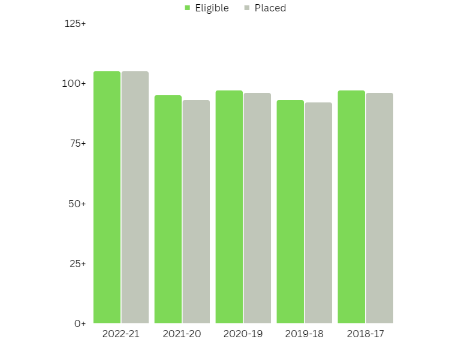
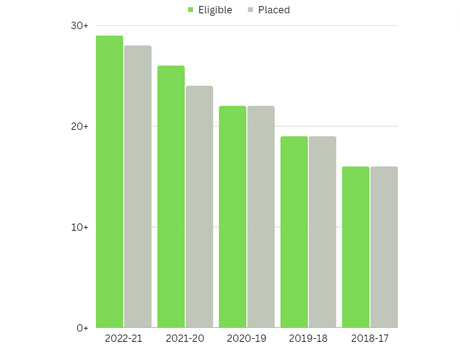

Campus Placement Statistics for B.Tech (IT) programme
| Placement Year | Eligible | Placed | Highest Pay | Average Pay |
|---|---|---|---|---|
| 2021-22 | 105 | 105 | 54.75 lakhs | 29.23 lakhs |
| 2020-21 | 95 | 93+2* | 45.03 lakhs | 17.28 lakhs |
| 2019-20 | 97 | 96+1* | 43 lakhs | 17.06 lakhs |
| 2018-19 | 93 | 92+1* | 39 lakhs | 14.15 lakhs |
| 2017-18 | 97 | 96+1* | 31 lakhs | 13.85 lakhs |
*Off Campus

Campus Placement Statistics for M.Tech (IT) programme
| Placement Year | Eligible | Placed | Highest Pay | Average Pay |
|---|---|---|---|---|
| 2021-22 | 29 | 28+1* | 45.03 lakhs | 17.38 lakhs |
| 2020-21 | 26 | 24+2* | 28 lakhs | 12.25 lakhs |
| 2019-20 | 22 | 22 | 20 lakhs | 12 lakhs |
| 2018-19 | 19 | 19 | 18.75 lakhs | 11.90 lakhs |
| 2017-18 | 16 | 16 | 18 lakhs | 11.63 lakhs |
*Off Campus
